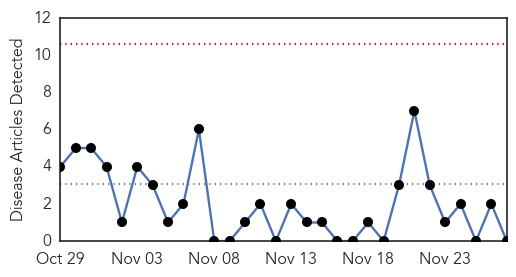
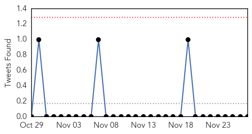
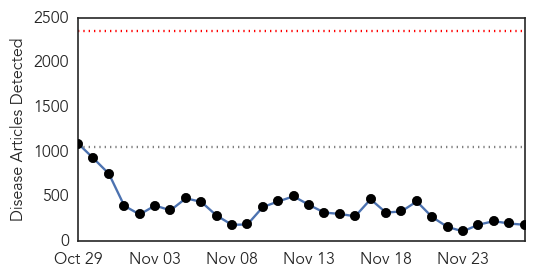
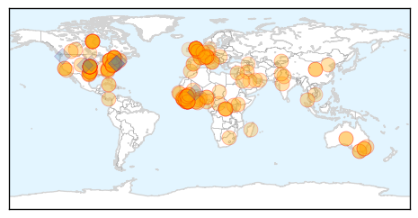

MERS
30-Day Web Trend
0 alerts, 0 warnings

30-Day Twitter Trend
0 alerts, 0 warnings

Article Locations

Article Confidences

Top Articles:
-
No articles found for Nov 27, 2014
Top Tweets:
-
No tweets found for Nov 27, 2014
Ebola
30-Day Web Trend
0 alerts, 0 warnings

30-Day Twitter Trend
0 alerts, 0 warnings

Article Locations
Article Confidences

Top Articles:
- 1.000
- UPDATE 2-Number of Ebola cases nears 16,000 as Sierra Leone loses ground
- 1.000
- Hunger widespread as Sierra Leone set to miss Ebola targets
- 1.000
- Ebola Death Toll Reaches 5,689
- 1.000
- Emergency NGO doctor is first Italian to contract Ebola
- 1.000
- Who is WHO? And How Are They Fighting Ebola?
- 1.000
- Sierra Leone goes hungry as Ebola hits farming; U.N. targets prove elusive
- 1.000
- First human trials of Ebola vaccine look promising
- 1.000
- Ebola Death Toll Reaches 5,689
- 1.000
- Scientists: 'Positive' results for Ebola vaccine
- 1.000
- Ebola Death Toll Reaches 5,689
- 1.000
- 600 new Ebola cases this week
- 1.000
- Sierra Leone official: Ebola may have reached peak
- 1.000
- US researchers report successful trial of Ebola vaccine
- 0.999
- Nigeria is free of Ebola
- 0.999
- Forces medical team to be deployed to Ebola-plagued Sierra Leone
- 0.999
- Canadian government grants $2.6 million to Samaritan's Purse to continue Ebola fight -- CALGARY, Nov. 27, 2014
- 0.999
- Lloydminster Meridian Booster
- 0.999
- Canada to send military medical specialists to Sierra Leone
- 0.999
- Archives > News > Elk Grove’s state rep leads Ebola hearing
- 0.999
- Ebola unlikely in patient admitted to Calgary hospital, say officials
- 0.999
- Ebola outbreak: Canada calls for volunteers to fight Ebola in Africa
- 0.999
- Ebola: Keeping patients alive as body fights back
- 0.999
- WHO draft report: We botched response to Africa's Ebola outbreak
- 0.999
- Vaccine one step closer, as infection rates accelerate in Sierra Leone
- 0.999
- Ebola crisis: French President Hollande visits Guinea
- 0.999
- US Ebola monitors find no cases
- 0.999
- Ebola toll rises in W. Africa amid 'stable' situation — RT News
- 0.999
- At 1 month, U.S. Ebola monitors finding no cases
- 0.999
- Government of the KR takes necessary measures to prevent the Ebola virus :: Kabar
- 0.999
- CORRECTED-UPDATE 1-Ebola cases near 16,000, Sierra Leone to overtake Liberia soon with most cases - WHO
- 0.998
- Canada sending military medics to Africa
- 0.998
- Canadian Forces medical team to be deployed to Ebola-plagued Sierra Leone
- 0.998
- UN says Sierra Leone to miss Ebola target
- 0.998
- The Portland Press Herald / Maine Sunday Telegram
- 0.998
- Canada sending military medics to Africa
- 0.998
- Government of Canada Announces Additional Support to Help Global Efforts to Fight Ebola in West... -- OTTAWA, Nov. 27, 2014
- 0.998
- Canadian Forces medical team to be deployed to Ebola plagued Sierra Leone
- 0.998
- Italian Ebola patient receives experimental drug - update
- 0.998
- US Ebola Monitors Finding No Additional Cases
- 0.998
- Ghana, Business Advice, Jobs, News, Business Directory, Real Estate, Finance, Forms, Auto
- 0.998
- Ebola outbreak: Indian pharmacy worker died in Liberia
- 0.998
- #Ebola: Sierra Leone appeals for US help, with infections rising
- 0.998
- At 1 month, US Ebola monitors finding no cases
- 0.998
- Canadian Forces medical team to be deployed to Ebola-plagued Sierra Leone
- 0.998
- Monitors find no new cases of Ebola in U.S.
- 0.998
- Alberta health officials say patient 'unlikely' to have Ebola
- 0.997
- Long wait yet for Ebola vaccine
- 0.997
- Ebola: UN crisis response mission opens new office in Mali
- 0.997
- Ebola vaccine cAd3-EBO raises hopes in first trial
- 0.997
- UN Crisis Response Mission Opens New Office in Mali
Showing top 50 articles...
Top Tweets:
- 0.913
- RT: UK government must do more to help fight the Ebola outbreak in Sierra Leone | Letter from the UK-Sierra Leone... http://…
- 0.782
- UK government must do more to help fight the Ebola outbreak in Sierra Leone | Letter from the UK-Sierra Leone... http://t.co/tGj7Lp74O1
- 0.772
- The Ebola virus isn't stopping: Sierra Leone to eclipse Liberia in Ebola cases http://t.co/Iehi6pZL3K http://t.co/3Qn5wIgy8P
- 0.759
- Ebola in Sierra Leone: 705 susp/prob/conf cases 11/12-11/19/2014; 527 cases 11/19-11/26/2014.That's a 25% decline this wk from week before.
- 0.747
- Canada is sending 40 military medical workers/support staff to an Ebola treatment unit in Sierra Leone built to care for infected HCWs.
- 0.672
- Sierra Leone to Eclipse Liberia in Ebola Cases http://t.co/O9j2AouzTX
- 0.669
- RT: Ebola virus found in breast milk <40 days after symptoms found even after the virus no longer in patient's blood http://t.co…
- 0.669
- RT: Ebola virus found in breast milk <40 days after symptoms found even after the virus no longer in patient's blood http://t.co…